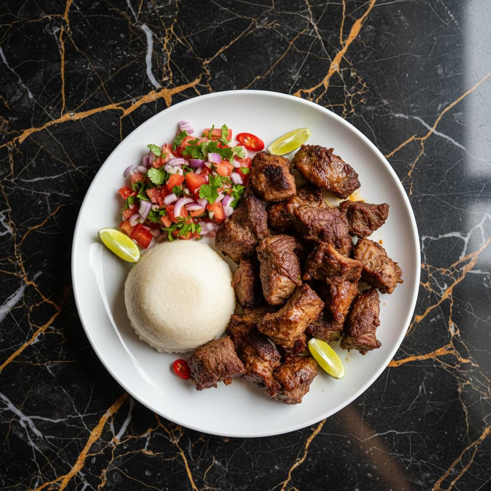

Back to Main Page
Nyama Choma

Kenyan nyama choma is meat, usually goat or beef,
grilled until tender and browned.
It is commonly served with kachumbari and ugali,
making it a favourite for family gatherings and
celebrations.
Ingredients
- 1 kg meat (goat or beef)
- 2 tbsp salt
- 1 tsp black pepper
- 2 cloves garlic, minced
- 1 tbsp ginger, minced
Instructions
- Marinate the meat with salt, black pepper, garlic, and ginger for at least 2 hours.
- Preheat the grill to medium-high heat.
- Grill the meat for about 15-20 minutes on each side or until fully cooked and browned.
- Serve hot with kachumbari and ugali.